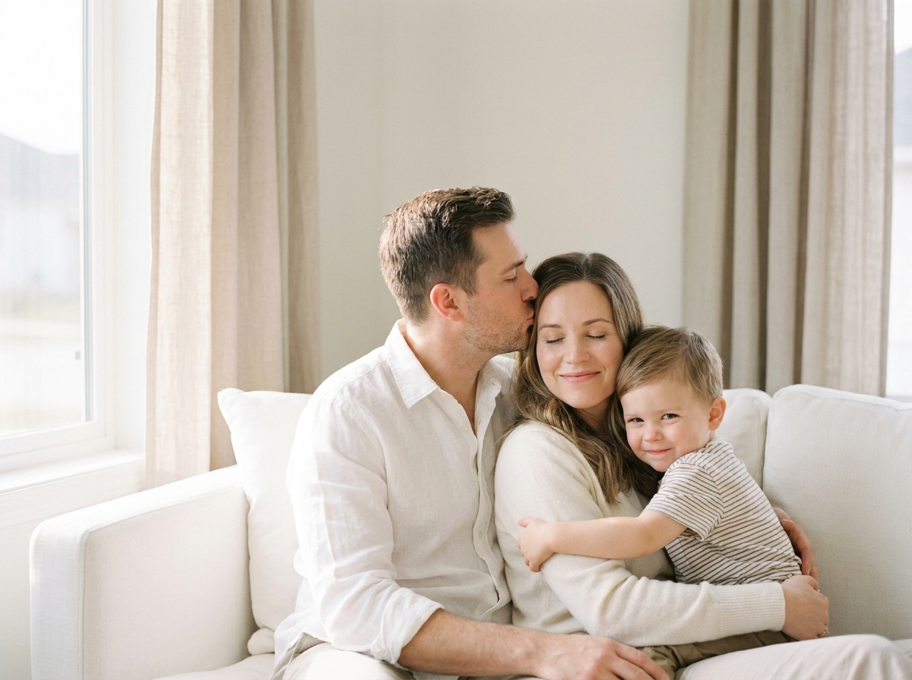
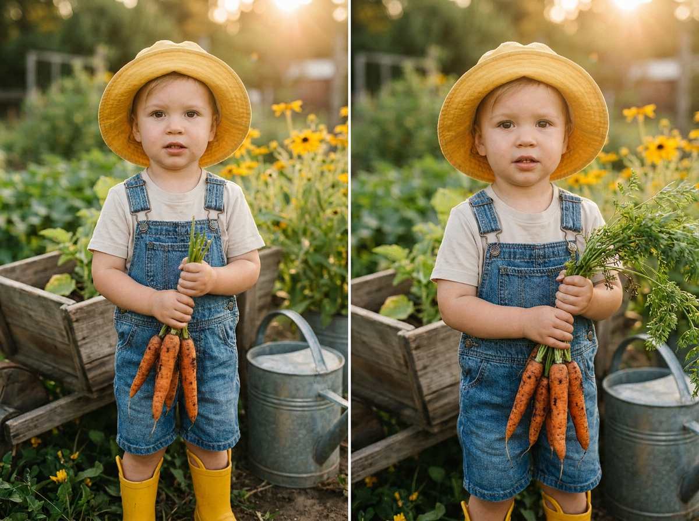
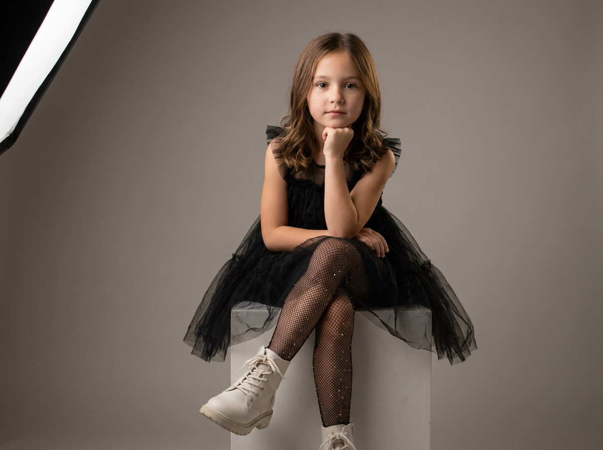
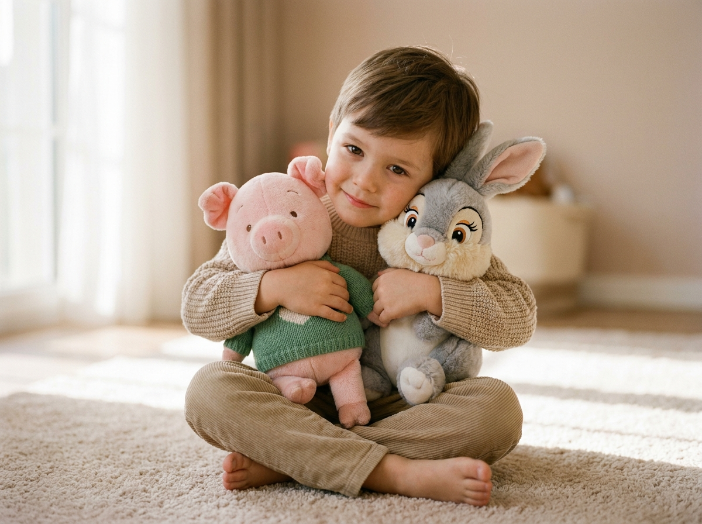
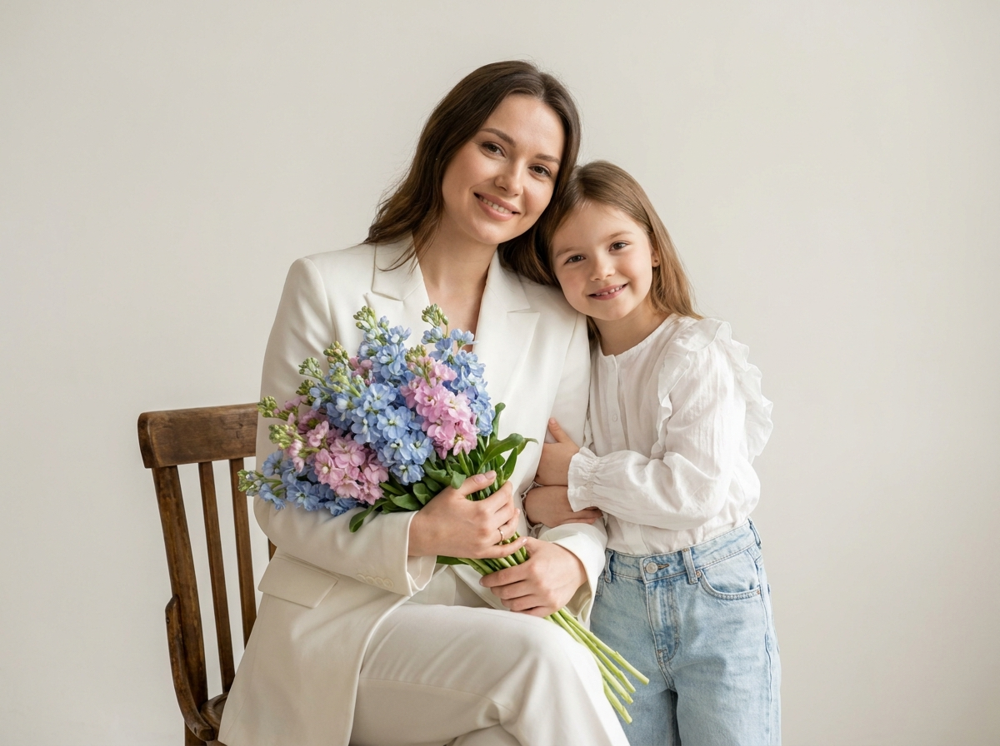
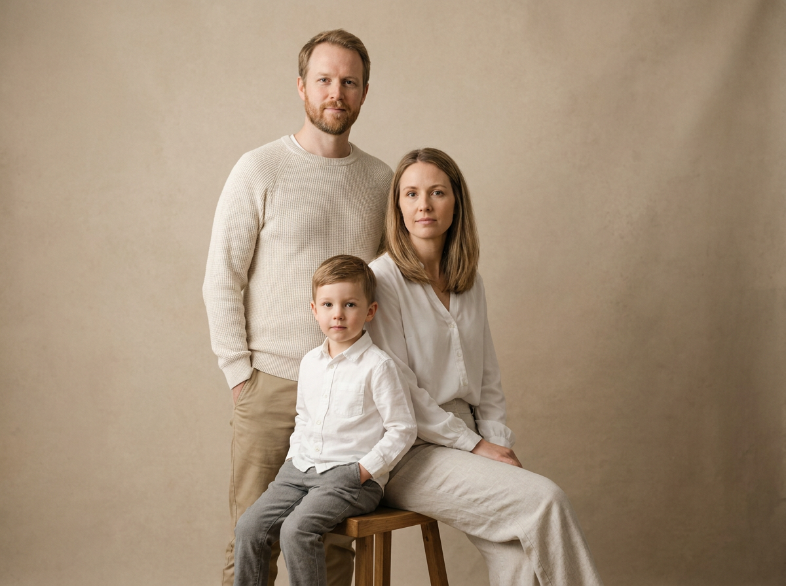
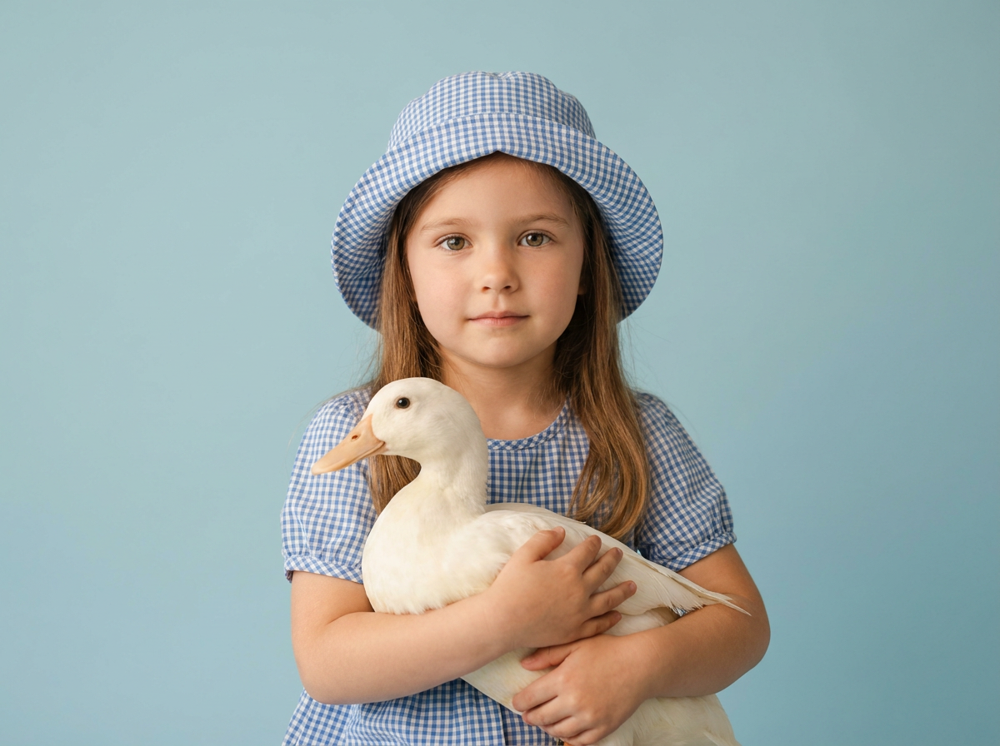
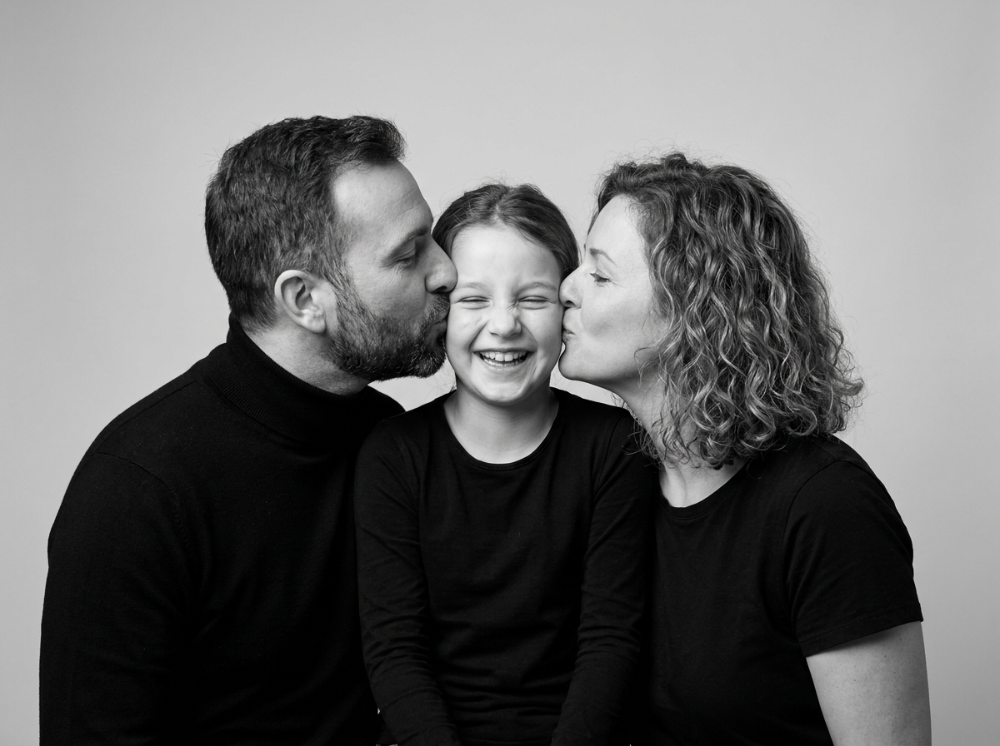
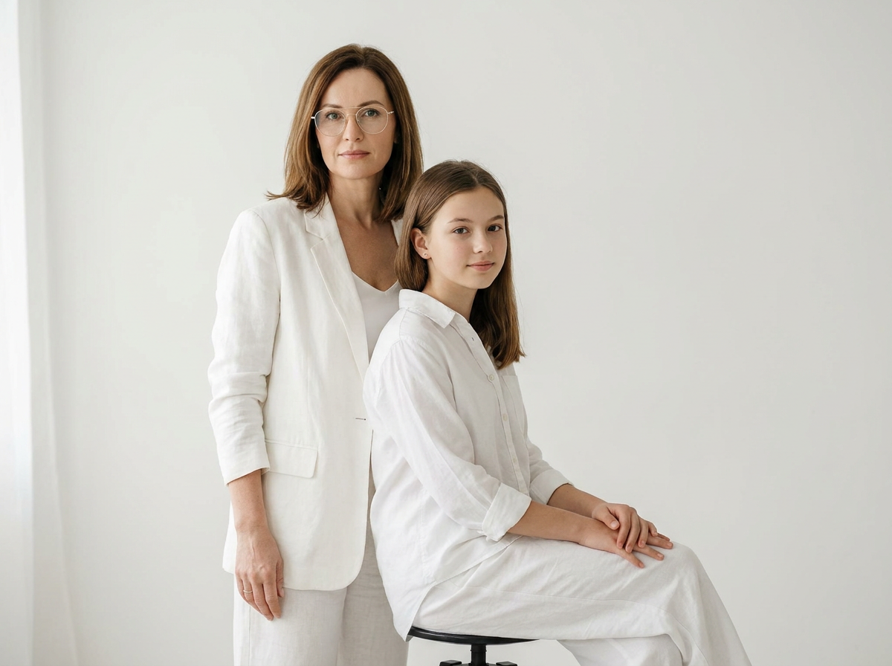
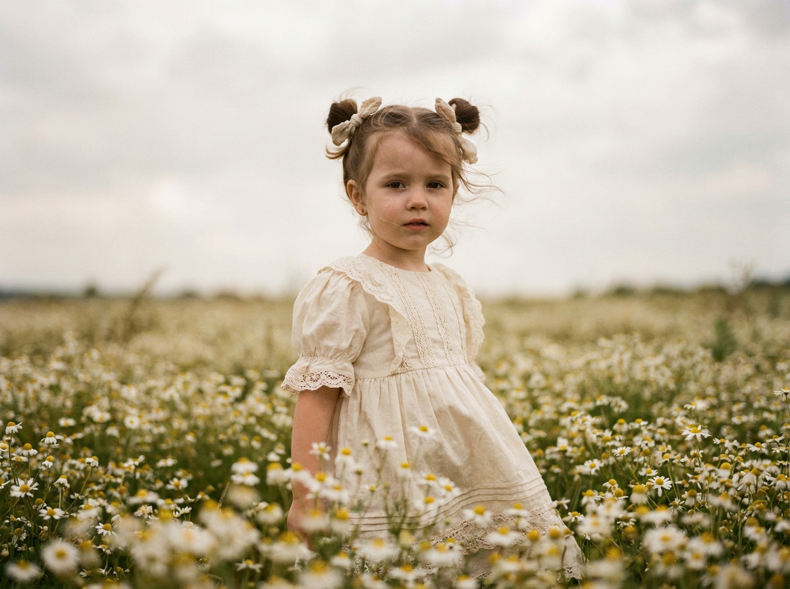

ИИ-фото с детьми: 10 промптов для нейросети

Обычная фотосессия с ребёнком не всегда складывается: малыш устал, погода подвела, а подходящего света и красивого фона не оказалось. Генерация помогает собрать нужную сцену из нескольких деталей и получить выразительный кадр без долгой подготовки.
В подборке — десять сценариев для семейных портретов, съёмки с игрушками и животными, нежных чёрно-белых кадров, fashion-образов и фотографий на природе. Подставьте свои референсы, уточните возраст и одежду — и запускайте генерацию.
Как сгенерировать такое фото: пошагово
Нужен снимок анфас при ровном свете, лицо в кадре целиком, без тёмных очков и головных уборов. Разрешение от 1000 пикселей по короткой стороне. Чем чётче исходник, тем точнее модель повторит черты.
Выберите сценарий ниже и нажмите «Копировать» — текст уйдёт в буфер целиком, вместе с командой сохранения внешности. Эта команда стоит первой строкой и отвечает за то, чтобы на выходе было ваше лицо, а не случайное.
Кнопка «Сгенерировать» рядом с каждым промптом открывает модель в новой вкладке. Nano Banana Pro работает с референсом лица — в отличие от моделей, которые генерируют портрет с нуля и узнаваемость теряют.
Промпт — в поле ввода, портрет — через загрузку референса. Порядок значения не имеет, но без референса команда сохранения внешности работать не будет: модели нечего сохранять.
Для сторис и ленты берите 9:16, для превью и обложек — 4:3. Первый результат редко идеален: если поза или свет ушли не туда, поправьте соответствующую часть промпта и запустите заново. Обычно хватает двух-трёх итераций.
10 промптов для генерации
1. Тёплый семейный портрет
Строго сохранить внешность по загруженному референсу: черты лица, пропорции, мимику и текстуру кожи без изменений. Фотореалистичный вертикальный семейный портрет в среднем плане: мужчина, женщина и ребёнок сидят вместе на белом диване в светлой минималистичной комнате с бежевыми шторами. Мужчина в белой рубашке ласково целует женщину в висок; она улыбается с закрытыми глазами, а ребёнок обнимает её и смотрит в камеру с игривой улыбкой. Свет мягко падает слева из окна, палитра тёплая, пастельная, атмосфера домашняя и интимная. Используй малую глубину резкости, натуральную кожу, мягкий контраст, высокое разрешение и едва заметную плёночную зернистость. Эффект съёмки на 50mm, f/1.8, низкое ISO.
2. Малыш в морковном саду

Строго сохранить внешность по загруженному референсу: черты лица, пропорции, мимику и текстуру кожи без изменений. Реалистичная фотография малыша в жёлтой шляпе, жёлтых резиновых сапожках, джинсовом комбинезоне и светлой футболке. Ребёнок держит в руке пучок свежей моркови и стоит в уютном деревенском саду. На заднем плане видны деревянная тележка, металлическая лейка, зелёные растения и жёлтые цветы. Снимок сделан в мягкий золотой час: тёплый естественный свет, выразительное плавное боке и малая глубина резкости. Передай фактуру кожи, ткани, моркови и дерева с высоким реализмом. Тёплая цветокоррекция, объектив 35mm, эквивалент f/1.8, ISO 200.
3. Девочка в чёрном платье

Строго сохранить внешность по загруженному референсу: черты лица, пропорции, мимику и текстуру кожи без изменений. Студийная фотореалистичная фотография девочки, сидящей по центру на белом кубе. На ней чёрное платье из фатина, блестящие сетчатые колготки и белые грубые ботинки. Девочка опирается подбородком на руку, смотрит прямо в объектив и выглядит спокойно, немного задумчиво. Фон нейтральный серый, слева установлен мягкий софтбокс, сзади работает слабая контровая подсветка. Сделай глаза резкими, а края кадра слегка размытыми боке. Покажи фактуру ткани и страз, естественный тёплый оттенок кожи и деликатную цветокоррекцию. Вертикальная композиция, 50mm, f/1.8, ISO 100, 1/160s, высокое разрешение.
4. Мальчик с любимыми игрушками

Строго сохранить внешность по загруженному референсу: черты лица, пропорции, мимику и текстуру кожи без изменений. Естественный фотореалистичный портрет мальчика в бежевом вязаном свитере и брюках. Ребёнок сидит, скрестив ноги, на мягком светлом ковре и крепко прижимает к себе две плюшевые игрушки: свинку в зелёной одежде и серого кролика с пушистыми щеками и длинными ресницами. Мягкий дневной свет из окна падает сбоку, создавая тёплую пастельную атмосферу. Используй небольшую глубину резкости и плавное боке, но оставь выразительные глаза, мех игрушек и вязку свитера детализированными. Натуральные тона кожи, мягкий контраст, реалистичная цветопередача и тонкая плёночная зернистость.
5. Мама и дочь с цветами

Строго сохранить внешность по загруженному референсу: черты лица, пропорции, мимику и текстуру кожи без изменений. Фотореалистичный снимок по пояс: молодая женщина в элегантном белом костюме сидит на деревянном стуле и держит большой букет голубых и розовых матиол. Рядом девочка в белой блузке с оборками и джинсах нежно обнимает мать и прижимается к ней. Обе улыбаются, между ними чувствуется тёплая эмоциональная связь. Используй отдельные референсы для взрослой женщины и девочки: сохрани узнаваемые черты, возраст, пропорции, причёски и индивидуальность, не смешивай лица. Фон светлый и нейтральный, освещение мягкое естественное, глубина резкости небольшая. Покажи фактуру кожи, волос, ткани и цветов. Светлый минимализм, центрированная композиция, высокое разрешение.
6. Семья в бежевой студии

Строго сохранить внешность по загруженному референсу: черты лица, пропорции, мимику и текстуру кожи без изменений. Фотореалистичный студийный портрет семьи из трёх человек на тёплом бежевом фоне. Мужчина и женщина стоят рядом с ребёнком, поза близкая, спокойная и естественная. Мужчина одет в светлый вязаный свитер и брюки цвета хаки, держит одну руку в кармане; у него лёгкая небритость. Женщина сидит в белой блузе и светлых брюках с нейтральным выражением лица. Впереди мальчик на табурете, в белой рубашке и серых брюках, его руки находятся в карманах. Свет мягко идёт сбоку, кожа выглядит натурально, фон слегка уходит в размытие. Тёплое настроение, высокая детализация, естественные позы, объектив 50mm.
7. Девочка с белой уткой

Строго сохранить внешность по загруженному референсу: черты лица, пропорции, мимику и текстуру кожи без изменений. Нежный вертикальный студийный портрет маленькой девочки в голубом платье в клетку и подходящей панаме. Девочка аккуратно держит на руках белую утку, смотрит спокойно и мягко, её глаза остаются резкими. Фон пастельно-голубой, свет рассеянный и естественный, без жёстких теней. Передай мелкие детали кожи, волос и белых перьев, сохрани натуральную текстуру материалов и реалистичное направление света. Используй тёплую цветокоррекцию, малую глубину резкости и мягкое боке. Композиция вертикальная, центрированная, объектив 50mm, f/1.8, высокое разрешение.
8. Семейный смех в монохроме

Строго сохранить внешность по загруженному референсу: черты лица, пропорции, мимику и текстуру кожи без изменений. Эмоциональная реалистичная чёрно-белая студийная фотография семьи из трёх человек. Мужчина слева и женщина справа наклоняются к маленькой девочке в центре и одновременно целуют её в щёки. Девочка смеётся, её глаза закрыты от радости, выражение лица счастливое и беззаботное. Все трое одеты в чёрные футболки или водолазки. Фон простой, светлый и однородный, без лишних деталей. Мягкий студийный свет направлен на лица, подчёркивает текстуру кожи, волос и живые эмоции. Кадр плотный, лица занимают большую часть композиции, стиль профессионального портрета, высокая детализация. Сохрани индивидуальные черты, бороду мужчины, длину и завитки волос женщины, мимику девочки.
9. Белый fashion-портрет

Строго сохранить внешность по загруженному референсу: черты лица, пропорции, мимику и текстуру кожи без изменений. Фотореалистичный студийный fashion-editorial портрет в минималистичном светлом интерьере. Взрослая женщина сидит позади девочки или подростка; обе героини одеты полностью в белое. Девочка находится на переднем плане, слегка повёрнута к камере, на ней белая рубашка и белые брюки. Женщина носит очки в тонкой металлической оправе, у неё мягкий естественный макияж, аккуратные волосы до плеч или немного длиннее и спокойное уверенное выражение лица. Позы сдержанные и элегантные. Фон чистый белый, свет мягкий и рассеянный, композиция строгая, с ощущением журнальной съёмки. Сохрани естественные пропорции, возраст и узнаваемые черты обеих героинь, без смешения лиц.
10. Девочка среди белых цветов

Строго сохранить внешность по загруженному референсу: черты лица, пропорции, мимику и текстуру кожи без изменений. Кинематографичный фотореалистичный портрет маленькой девочки, стоящей в поле мелких белых цветов. На ней винтажное платье кремового оттенка с кружевом и рукавами-фонариками, волосы собраны в два пучка, украшенные ленточками. Лёгкий ветер чуть двигает волосы и ткань платья. Съёмка выполнена при мягком рассеянном облачном свете, палитра тёплая, слегка приглушённая и десатурированная. Используй выраженное боке на переднем и заднем плане, но сохрани высокую детализацию глаз и кожи. Тонкая плёночная зернистость, низкий уровень ISO, объектив 50–85 мм, f/1.8–2.2. Центрированная композиция, низкий угол съёмки, нежное настроение.
Что важно учесть в этом стиле
Детские портреты лучше выглядят при мягком свете без глубоких теней. Для домашней сцены подойдёт рассеянное окно, для студии — большой софтбокс, а на природе — облачная погода или золотой час. Указывайте направление света и его характер, иначе лицо может получиться плоским или пересвеченным.
Референс задаёт внешность, но не гарантирует идеальное совпадение с первого раза. Чем точнее описаны возраст, одежда, поза, выражение лица и расстояние до камеры, тем меньше случайных деталей. Для семейных кадров отдельно прописывайте, кто где находится, чтобы нейросеть не перепутала лица и руки.
Идеи для вариаций
- Замените диван в семейном портрете на кровать с льняным покрывалом или деревянную скамью.
- Попросите ребёнка держать вместо моркови корзину яблок, букет полевых цветов или маленькую лейку.
- Сделайте студийный образ девочки в чёрном платье цветным, добавив бордовый или изумрудный фон.
- Поменяйте плюшевые игрушки на любимого медведя, куклу или набор мягких зверей.
- Для снимка мамы и дочери используйте ветки сирени, ранункулюсы или сухоцветы.
- В сцене с уткой замените птицу на гуся, цыплёнка или игрушечную фигурку.
- Добавьте к белому fashion-портрету кресло, зеркало или тонкую тень от окна.
- Для полевого кадра выберите ромашки, клевер, высокую траву или цветущий сад.
Как собрать свой промпт
Начните с типа изображения: портрет, семейная фотография, студийная съёмка или кадр на природе. Затем задайте героев и их расположение в кадре. После этого опишите одежду, жесты, выражение лица и предметы вокруг. Такой порядок помогает модели не потерять ключевые детали.
В конце добавьте свет, фон, цветовую палитру и параметры камеры. Для портрета подойдут 50mm и f/1.8, для более широкого сюжетного кадра — 35mm. Если нужен реализм, укажите натуральную текстуру кожи, высокую детализацию, мягкий контраст и отсутствие лишних пальцев, украшений или предметов. При работе с референсом уточните, чьё лицо к нему относится.
Ошибки, из-за которых кадр не получается
- Слишком много требований в одной фразе. Разделяйте героев, позы, одежду, свет и фон на отдельные смысловые части.
- Неясное расположение людей. Пишите «мужчина слева, женщина справа, ребёнок между ними», а не просто «семья рядом».
- Противоречивый свет. Не сочетайте жёсткое полуденное солнце с мягким студийным освещением.
- Нет указания на возраст. Слова «ребёнок» недостаточно: уточните, это малыш, дошкольник или подросток.
- Слишком сильная ретушь. Просите натуральную кожу и реалистичные пропорции, иначе лицо потеряет сходство.
- Сложные предметы в руках. Утка, букет и игрушки могут исказиться, поэтому описывайте их форму, цвет и положение.
Частые вопросы
Как сделать такое ИИ-фото бесплатно?
Для первых попыток подойдут Kandinsky и Шедеврум: они позволяют генерировать изображения без оплаты, но качество совпадения с референсом и число доступных генераций могут меняться. Krea AI и Arena.ai удобны для сравнения вариантов, однако часть функций, особенно работа с референсами, может быть ограничена. Бесплатные режимы не всегда точно сохраняют детские лица, поэтому результат иногда приходится перегенерировать.
Как добиться сходства ребёнка с референсом?
Загрузите чёткое фото без сильных фильтров и опишите, что нужно сохранить: форму лица, глаза, волосы, цвет кожи и возраст. Не добавляйте противоречивые указания вроде «точно повторить лицо» и одновременно «сильно изменить внешность». Сделайте несколько вариантов с одинаковым описанием, меняя только силу влияния референса.
Почему нейросеть искажает руки и игрушки?
Руки, пальцы, объёмные букеты и животные остаются сложными объектами для генерации. Упростите сцену, укажите число пальцев и положение каждой руки, а предмет опишите отдельно. Если в кадре много деталей, сначала добейтесь правильной позы, затем исправьте отдельные элементы редактором.
Можно ли использовать такие изображения в соцсетях?
Да, если у вас есть согласие родителей или законных представителей ребёнка и вы соблюдаете правила выбранного сервиса. Не выдавайте сгенерированный кадр за документальную фотографию, особенно если сцена показывает событие, которого не было. Для публикации лучше проверить настройки приватности и не добавлять к изображению личные данные.